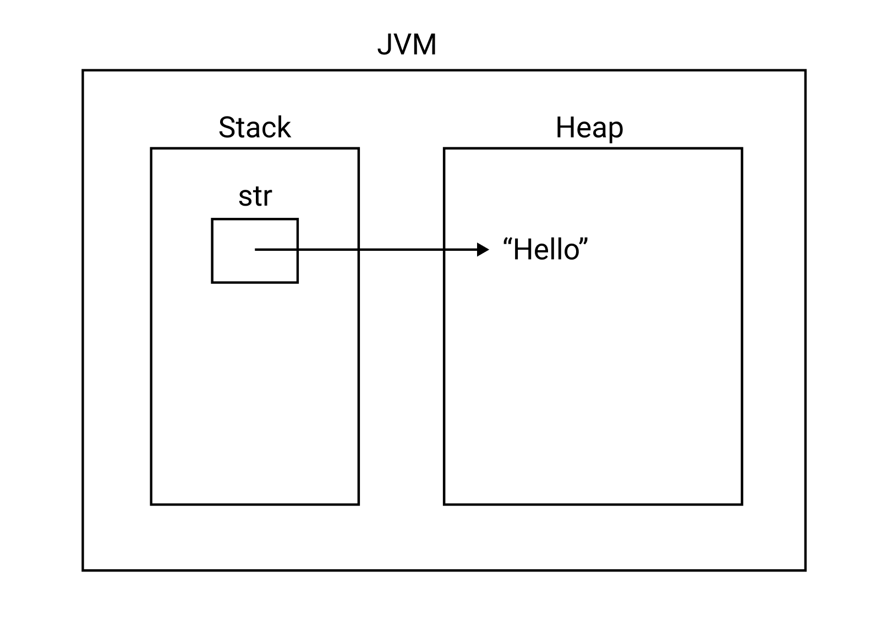
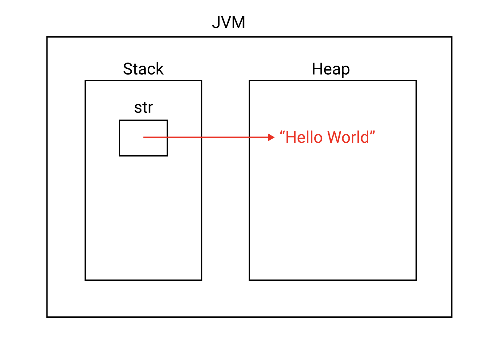
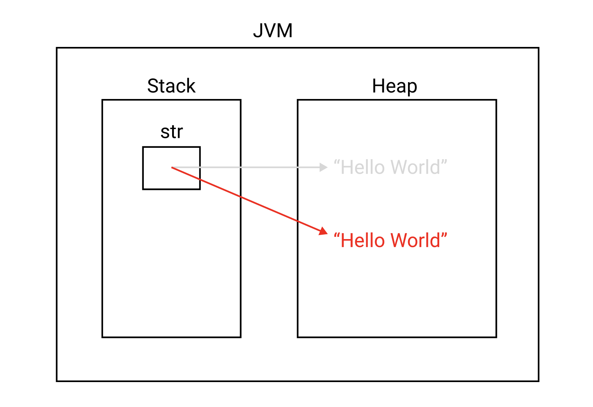
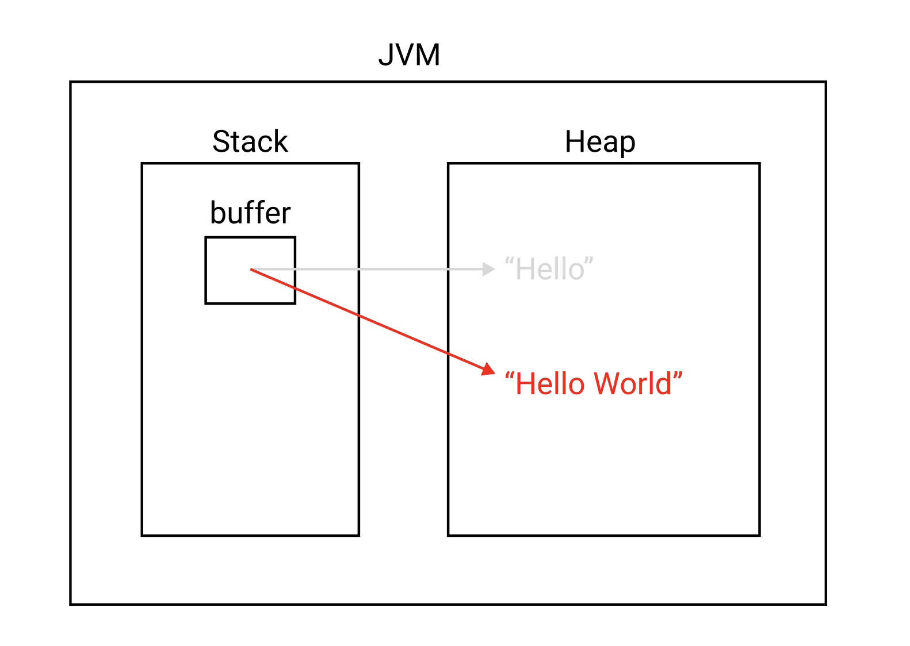
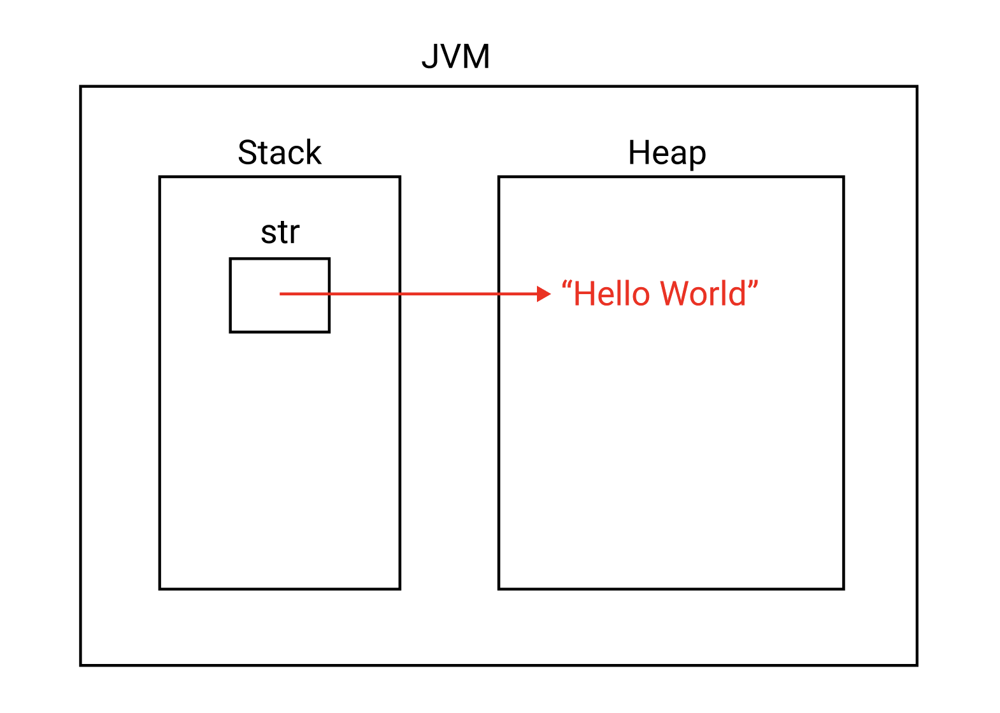

[Java] String 클래스, StringBuffer, StringBuilder
String클래스를 제대로 이해하려면 JVM의 메모리 구조, 원시 타입과 참조 타입, Mutable과 Immutable 포스트를 먼저 읽어보길 권장한다.
목차
Java에서 문자열을 다루는 대표적인 클래스에는 String, StringBuffer, StringBuilder가 있다.
문자열
Java에서 문자열은 원시 타입이 아니라 참조 타입이다. 문자열은 다음과 같이 생성한다
1 | String str = "Hello"; |
문자열은 참조 타입이기 때문에 스택 영역에 저장된다.

문자열을 합칠 때는 +연산자를 사용한다. 변수 str에 “ world!” 문자열을 추가해보자.
1 | String str = new String("Hello"); |
문자열은 Immutable Object이기 때문에 메모리 구조는 다음과 같은게 아니라

다음과 같이 새로운 String 객체가 생성된다.

StringBuffer
이처럼 문자열은 Immutable Object이기 때문에 문자열 추가, 수정, 삭제 등의 연산이 빈번하면 메모리의 힙 영역에 객체가 여러 번 생성되어 성능에 영향을 주게 된다.
이러한 문제를 해결하기 위해 Java는 Mutable Object인 StringBuffer와 StringBuilder를 도입했다.
StringBuffer가 제공하는 append(), insert(), delete(), replace() 등의 메소드를 제공하면 동일한 객체에서 문자열을 변경할 수 있다.
StringBuffer 예제를 살펴보자.
1 | StringBuffer buffer = new StringBuffer("Hello"); |
위 코드는 아래처럼 객체를 새롭게 생성하는게 아니라

아래처럼 기존 객체의 값을 변경한다.

StringBuffer클래스는 다양한 메소드를 지원한다.
(1) append()
끝에 문자열을 추가한다.
1 | StringBuilder builder = new StringBuilder("abcd"); |
(2) insert()
특정 위치에 문자열을 추가한다.
1 | StringBuilder builder = new StringBuilder("1111"); |
(3) delete()
특정 범위의 문자열을 삭제한다.
1 | StringBuilder builder = new StringBuilder("1122211"); |
(4) replace()
특정 범위의 문자열을 다른 문자열로 대치한다.
1 | StringBuilder builder = new StringBuilder("1122211"); |
(5) reverse()
문자열을 뒤짚는다.
1 | StringBuilder builder = new StringBuilder("123456"); |
(6) substring()
문자열의 일부분을 추출한다.
1 | StringBuilder builder = new StringBuilder("123456"); |
(7) toString()
StringBuilder객체를 String객체로 변환한다.
1 | StringBuilder builder = new StringBuilder("123456"); |
StringBuilder
StringBuilder는 StringBuffer와 사용법이 거의 유사하다. 다만 다음과 같은 차이점이 있다.
| StringBuffer | StringBuilder |
|---|---|
| 동기화를 지원한다 | 동기화를 지원하지 않는다 |
| 멀티 스레드 환경에서 안전하다 | 멀티 스레드 환경에서 안전하지 않다. |
| 동기화 때문에 성능이 상대적으로 낮다. | 성능이 상대적으로 높다. |
따라서 단일 스레드 환경에서는 StringBuilder를 사용하고 멀티 스레드 환경에서는 StringBuffer를 사용한다.
요약하자면 문자열의 추가, 수정, 삭제가 빈번한 경우 String보다 StringBuffer 또는 StringBuilder클래스를 사용한다.
String 클래스
String클래스에는 문자열 조작을 위한 다양한 메소드가 존재한다.
(1) toUpperCase()
문자열을 대문자로 변환한다.
1 | String name = "Leonel Messi"; |
(2) toLowerCase()
문자열을 소문자로 변환한다.
1 | String name = "Leonel Messi"; |
(3) substring()
문자열의 일부분을 반환한다.
1 | String name = "Leonel Messi"; |
(4) trim()
문자열 앞과 뒤의 공백을 제거한다.
1 | String name = " Hello "; |
(5) spilt()
인자로 전달받은 정규표현식 또는 문자를 기준으로 문자열을 나누어 배열에 저장하여 반환한다.
1 | String name = "aa_bb_cc_dd_ee"; |
1 | aa |
(6) replace()
특정 문자를 다른 문자로 대치한다.
1 | String str = "afafaf"; |
(7) replaceAll()
특정 문자열을 다른 문자열로 대치한다.
1 | String str = "afafaf"; |
(8) startsWith()
문자열이 특정 문자열로 시작하는지 확인한다.
1 | String str = "abcdef"; |
(9) endsWith()
문자열이 특정 문자열로 끝나는지 확인한다.
1 | String str = "abcdef"; |
(10) length()
문자열의 길이를 반환한다.
1 | String str = "abcdef"; |
(11) indexOf()
문자열에서 특정 문자의 인덱스를 반환한다. 특정 문자가 없으면 음수값을 반환한다.
1 | String str = "abcde"; |
(12) charAt()
문자열에서 특정 인덱스에 위치하는 문자를 반환한다.
1 | String str = "abcde"; |
(13) concat()
문자열 뒤에 추가한다. +연산자와 동일하다.
1 | String str = "aaa"; |
(14) equals()
두 문자열이 동일한지 비교한다.
1 | String str = "aaa"; |
(15) contains()
특정 문자나 문자열이 포함되는지 확인한다.
1 | String str = "abcde"; |
(16) matches()
문자열이 특정 패턴의 문자열을 포함하는지 확인한다. 특정 패턴은 정규 표현식을 의미한다.
1 | String str = "aaacccaaa"; |